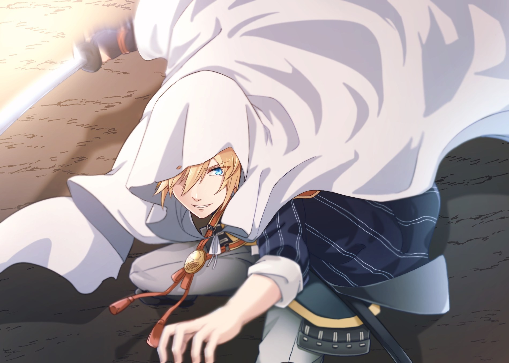
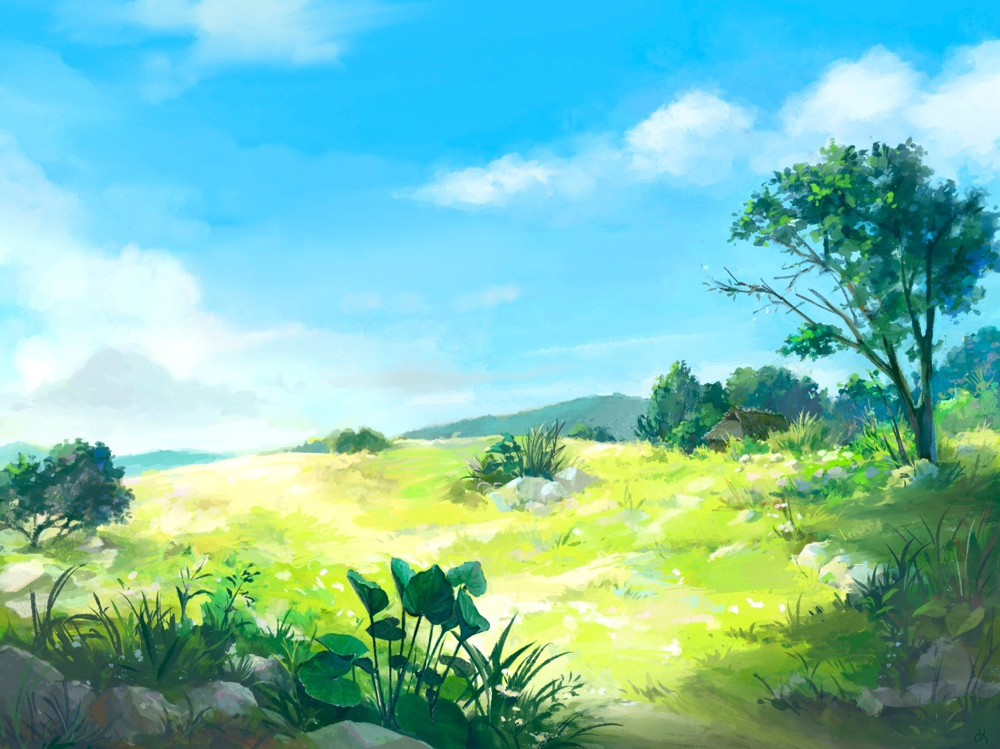

Chroniques d'un pourfendeur
RAINETERO
Il existe des noms que l'on reçoit à la naissance, et d'autres que l'on passe une vie entière à essayer de mériter.
Entre la pluie du Sentier Tonnerre et le fracas de la Foudre, voici l'histoire d'un garçon qui apprit qu'on ne pouvait pas tout esquiver.


Une vie entre deux orages
L'héritage ne fait pas l'homme.
On lui a souvent raconté la légende de Beyond Netero. Pourtant, Rai a grandi avec de plus grandes préoccupations : Mémé Turbo, les beignets et une pluie impossible à esquiver.
Puis un soir, le village du Sentier Tonnerre a cessé de ressembler à celui de son enfance.
« Aujourd'hui, je cours pour que d'autres puissent encore regarder la pluie tomber. »